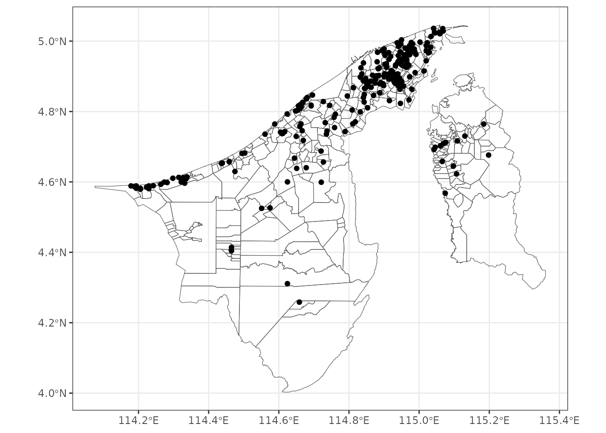

This vignette introduces the datasets related to school and education
included in the bruneimap. Datasets include GIS data -
sch_sf and study variables - tchr,
enrolment, enrolment_moe for the year
2018.
# Load libraries
library(tidyverse)
#> Error in get(paste0(generic, ".", class), envir = get_method_env()) :
#> object 'type_sum.accel' not found
library(sf)
library(ggplot2)
library(bruneimap)sch_sf
The sch_sf dataset contains spatial information for all
schools in Brunei. It includes school names and their geographic
coordinates (latitude and longitude), along with the kampong, mukim, and
district where each school is located.
glimpse(sch_sf)
#> Rows: 252
#> Columns: 14
#> $ No. <dbl> 1, 2, 3, 4, 5, 6, 7, 8, 9, 10, 11, 12, 13, 14, 15, 16,…
#> $ School <chr> "Sekolah Rendah Beribi Telanai", "Sekolah Rendah Datu …
#> $ Sector <chr> "MOE", "MOE", "MOE", "MOE", "MOE", "MOE", "MOE", "MOE"…
#> $ Cluster <chr> "Cluster 1", "Cluster 1", "Cluster 1", "Cluster 1", "C…
#> $ Education.Level <chr> "Pre-Primary & Primary", "Pre-Primary & Primary", "Pre…
#> $ geometry <POINT [°]> POINT (114.8973 4.87885), POINT (114.9132 4.8923…
#> $ id <dbl> 45, 66, 87, 251, 245, 87, 113, 116, 954, 116, 247, 89,…
#> $ kampong <chr> "Kg. Beribi", "Kg. Kiarong", "Kg. Mata-Mata", "STKRJ T…
#> $ mukim <chr> "Mukim Gadong B", "Mukim Gadong B", "Mukim Gadong B", …
#> $ district <chr> "Brunei-Muara", "Brunei-Muara", "Brunei-Muara", "Brune…
#> $ X <dbl> 114.8956, 114.9156, 114.8959, 114.8804, 114.8784, 114.…
#> $ Y <dbl> 4.886076, 4.895094, 4.902696, 4.924242, 4.904538, 4.90…
#> $ perimeter [m] 16000.315 [m], 9459.647 [m], 12062.622 [m], 3507.623 [m]…
#> $ area [m^2] 6372043.3 [m^2], 3851640.7 [m^2], 4833818.0 [m^2], 694…Schools in Brunei are categorised into three sectors: MOE, MORA (both public) and private. Additionally, MOE schools, ranging from primary to sixth form, are further organized into six clusters.
Below is a visualization of all schools across Brunei:
